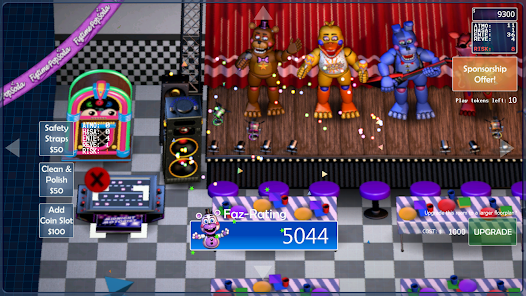
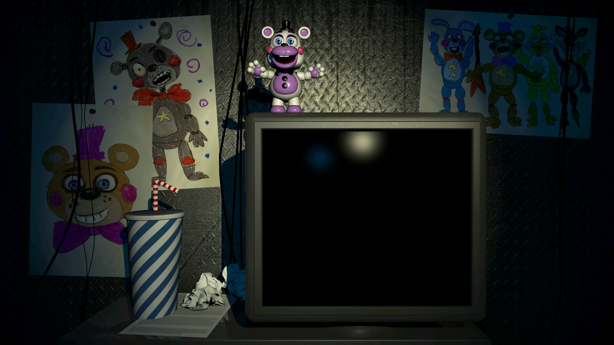
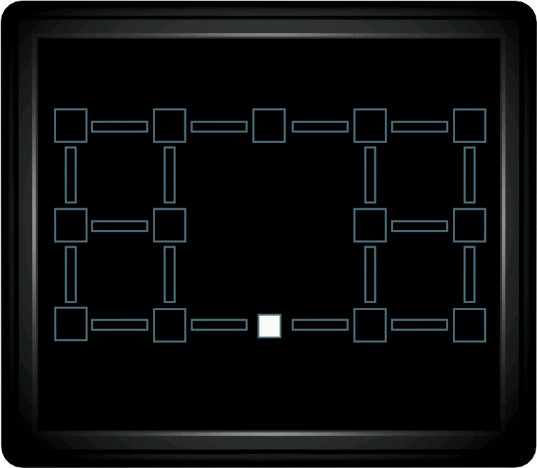
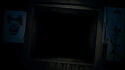

Five Nights at Freddy's Pizzeria Simulator é o sexto jogo de terror da Franquia Five Nights at Freddy's também feito individualmente por Scott Cawthon.
Lançado em 4 de dezembro de 2017, o jogo mais uma vez ganhou popularidade por sua atmosfera assustadora, mecânicas de jogo únicas, pelo criador não ter dado muito aviso prévio e também pelo jogo ser gratuito, ao contrário dos outros títulos.

Five Nights at Freddy's Pizzeria Simulator passa-se em uma pizzaria fictícia chamada Freddy Fazbear's Pizza Place que é gerida... por você!.
É uma sequência do quinto jogo da série e apresenta uma nova história em que você precisa gerir uma pizzaria da melhor forma possível para gerar dinheiro e boas avaliações.
Em Five Nights at Freddy's Pizzeria Simulator você precisa gerir uma pizzaria fazendo com que a segurança sempre esteja o mais elevada possível para evitar acidentes e também deve colocar o máximo de atrações possíveis para ganhar mais dinheiro por dia que se passa. Apesar de tudo isso, também existe uma parte de terror onde você precisa fazer tarefas em um computador, porém o computador faz muito barulho o que atrai animatrônicos que estão perto de você, para afasta-los necessita de tocar um áudio ou desligar o computador e olhar na direção em que o animatrônico está. tendo que sobreviver durante 5 noites, quanto mais se avança mais a dificuldade aumenta e maiores são os desafios nas pizzaria.
   